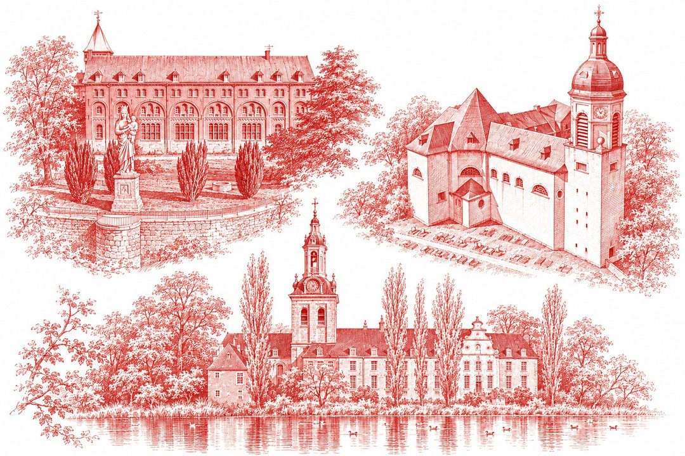

Zo ziet de dag eruit
Op de dag zelf duidt de app aan waar we in het programma zitten.
Een lus rond Leuven
Van het PSC in de Mechelsestraat over drie abdijen naar de Grote Markt. Tik op een etappe voor het stappenplan.
Grote Markt → station is nog 1,2 km (20 min), terug naar het PSC ± 600 m.
Google Maps toont je eigen positie en tekent de route mee. De rode lijn op het plan is de route; zwarte bolletjes geven de kilometers aan.
Negen eeuwen rond Leuven
Twee van de drie abdijen danken hun bestaan aan Godfried I met de Baard, graaf van Leuven. De derde kwam acht eeuwen later, op de heuvel waar zijn opvolgers hun burcht hadden.
Tijdlijn
Bronnen: Wikipedia (Keizersberg Abbey, Vlierbeek Abbey, Park Abbey).
Goed om te weten
Vervoer naar het vertrekpunt (PSC Leuven, Mechelsestraat 84) en terug is op eigen kosten.
Meebrengen
Wat kost het?
Het drankje op de Grote Markt achteraf is vrijblijvend en op eigen kosten.
Route op je gps of in een wandelapp
Het GPX-bestand opent in onder meer Komoot, Wikiloc, OsmAnd en Organic Maps.
Toch niet de hele dag?
Je kan aansluiten of afhaken bij elke abdij. Vanuit Kessel-Lo en Heverlee rijden bussen van De Lijn naar het centrum. Laat het de begeleiders weten. De route is niet geschikt voor rolstoelen: op de Keizersberg zijn er trappen.
016 27 44 80